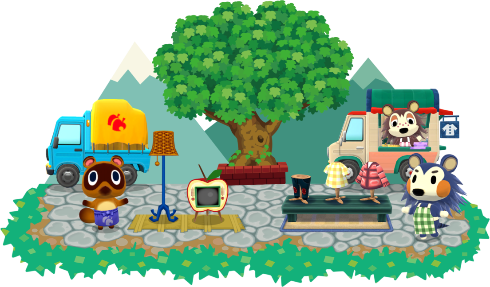

Animal Crossing provides opportunities that no other places offer! This town is best known for its captivating nature and small community where everyone knows each other! Animal Crossing focuses on being eco-friendly, meaning everything comes from mother-nature. This town is a place for you to escape reality!
Festivals are the perfect getaway for children from 3 to 13 years old. It has activities such as dancing, singing, bouncy houses, and more! You can set up field trips with the hosts and your kid will be busy all day long, exploring the whole festival and meeting friends. There's even food stands with cotton candy, hot dogs, ice cream, and more!
The Farm Market is known for its local farmer's delicious food! All the fruits and vegetables are fresh and some even sell baked goods made from their fruits. Every farmer sells something different so check all of them out! The Farm Market runs every week during spring and summer.
The people of Animal Crossing runs a different kind of party every week. It's a chance for everyone to hang out together and meet new friends. Every citizen of Animal Crossing is invited to come. Keep up with what party runs during the week so that you don't miss out!
Animal Crossing would not be popular for its nature if there was no dedicated camping club. Anyone can sign up, but people under 18 must have a gaurdian with them. The camp team takes a 3 day trip out to the wilderness and learns how to camp like a pro with their assigned instructor. You can sign up in a team, or with your own party.
If you didn't feel like camping or missed the chance to do it, every Friday night a movie will air in the middle of town. It's family friendly and there's food stands that sell snacks you can't get anywhere else. Drive in and enjoy the movie in your car, or book a spot and bring your own chairs, blankets, etc.
| Sunday | Monday | Tuesday | Wednesday | Thursday | Friday | Saturday |
|---|---|---|---|---|---|---|
| Festival: 1pm - 5pm Farm Market: 3pm - 6:30pm |
Pool Party: 12pm - 10pm | Camping Group: 1pm Friday - 3pm Sunday | Movie Marathon: 8pm - 12:30am |